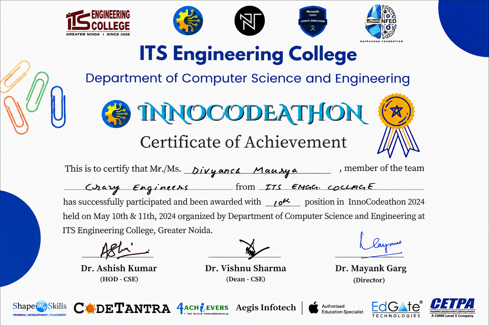

B.Tech — Computer Science Engineering
Covering core programming, databases, web development, data structures, algorithms, software engineering, and machine learning fundamentals through academic coursework and self-driven projects.
I'm Divyansh Maurya, a Computer Science Engineering student passionate about building scalable web applications, solving real-world problems through code, and creating polished digital experiences that people actually enjoy using.
I work with Java, Python, PHP, SQL, React, and modern frontend technologies. I enjoy turning ideas into working products — from data-driven projects and library systems to interactive dashboards and responsive UIs.
Right now I'm focused on sharpening my full-stack skills, participating in hackathons, getting internship experience, and building a portfolio of projects that go beyond the classroom.
My learning path combines computer science fundamentals with practical, project-based development across web, data, and software engineering.
Covering core programming, databases, web development, data structures, algorithms, software engineering, and machine learning fundamentals through academic coursework and self-driven projects.
Strengthening technical depth by building real projects, completing industry certifications, practising algorithms in Java, and exploring data tools like Tableau, Power BI, and Python analytics libraries.
A focused mix of programming, frontend, databases, analytics, and product thinking — with honest proficiency levels.
OOP, logic building, DSA, problem solving
Data analysis, automation, ML basics
Components, hooks, interactive UI
Server-side logic, web applications
Queries, schema design, relational DBs
Dashboards, visual analytics, reports
Responsive layouts, animations, UI
Clean layouts, usability, Figma basics
Certifications and course completions in programming, cloud computing, analytics, AI, and data tools.

Participated in InnoCodeathon 2024 organised by the Department of Computer Science & Engineering at ITS Engineering College, Greater Noida.

Microsoft & Simplilearn SkillUp certification focused on Power BI dashboards, analytics, and reporting.

Beginner-friendly Python programming certification covering logic building, syntax, and problem solving fundamentals.

Certification covering cloud concepts, virtualisation, deployment models, and cloud service architectures.

Learned data analytics fundamentals, insights generation, dashboards, and data-driven decision making.

Google Cloud & Simplilearn certification introducing Generative AI concepts, LLMs, and AI-powered tools.

Infosys Springboard certification covering Java-based problem solving, DSA concepts, and algorithmic thinking.
Projects built to solve real problems, practice real skills, and ship real output.
Machine learning project that analyses academic performance, skills, and interests to suggest suitable career paths for students. Built with Python and trained on structured academic data.
Full web-based library management system with book cataloguing, user management, issue and return tracking, and admin dashboard — built on PHP and MySQL.
Exploratory data analysis project using the Titanic dataset to uncover survival trends, handle missing values, and visualise feature relationships using Python analytics libraries.
Enrolled in Computer Science Engineering. Started learning programming fundamentals — Java, C, and discrete mathematics. Built my first HTML page and fell in love with the web.
Built the Digital Library System in PHP & MySQL — my first complete web application. Started practicing data structures in Java and exploring Python for data work.
Participated in InnoCodeathon 2024 at ITS Engineering College, Greater Noida. Collaborated with a team to build under time pressure — a huge leap in practical development and teamwork.
Earned 6+ certifications across DSA with Java (Infosys), Generative AI (Google Cloud), Cloud Computing, Data Analytics, Power BI, and Python — building verified skills across multiple domains.
Deploying live demos for all projects, building more React-based applications, improving documentation quality, and securing my first internship in web development or data engineering.
Key milestones, recognitions, and moments that shaped my technical growth.
Selected to participate in the college-level hackathon at ITS Engineering College. Collaborated under a tight deadline to design and build a working prototype with a team.
Completed certifications from Google Cloud, Infosys Springboard, Microsoft, and Simplilearn across AI, Cloud, DSA, Analytics, and Power BI.
Independently built a complete Digital Library System with user authentication, database operations, and admin dashboard — entirely self-directed.
Designed and trained a Career Path Prediction model using real-world features — including data cleaning, feature engineering, model evaluation, and result interpretation.
Built this entire portfolio from scratch using vanilla HTML, CSS, and JavaScript — no templates, no frameworks — with dark/light theme, animations, and responsive design.
Consistently contributing to projects on GitHub. All major projects are version-controlled with clear commits and documentation available publicly.
A concise overview of my education, skills, projects, and contact details — ready for internship screening.